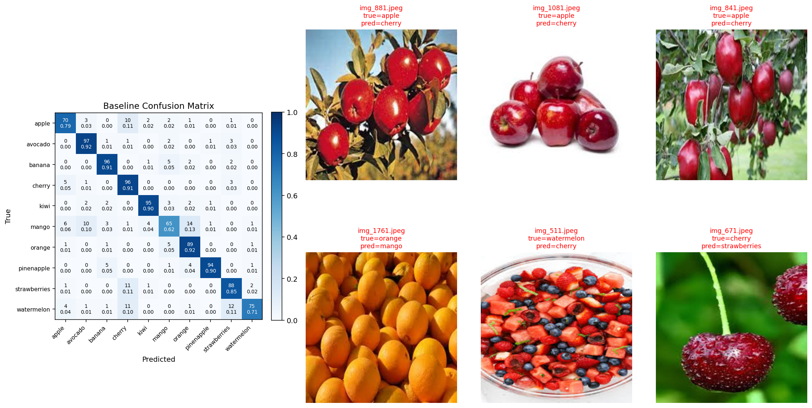
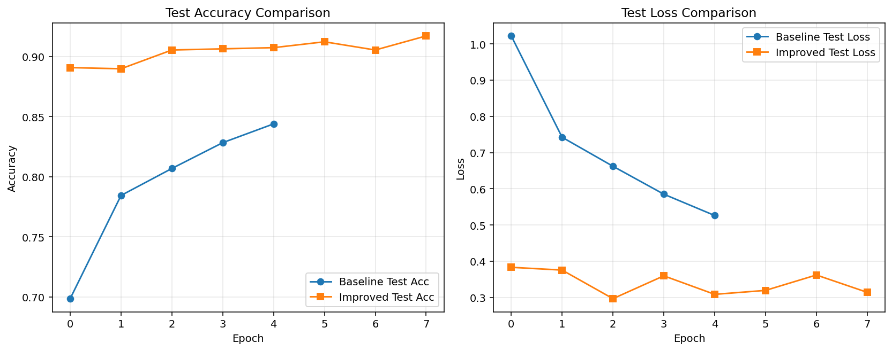
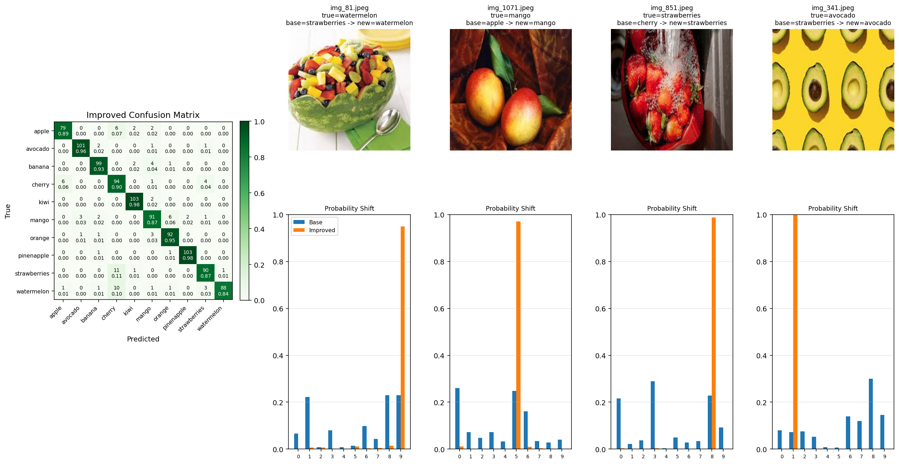

我先复现了教程中的基线 ResNet18 结果。基线配置为冻结主干网络、只训练最后的全连接层，训练 5 个 epoch，测试准确率为 84.39%。
从基线混淆矩阵可以看出，mango -> orange 和 strawberries -> cherry 是比较明显的易混淆类别；另外 watermelon -> strawberries 也较多，说明模型容易被颜色块、局部纹理和裁剪后的局部视图误导。

基线结果显示模型主要依赖局部颜色和纹理。明显问题包括 mango 被分成 orange，strawberries 被分成 cherry，说明只训练最后一层时高层特征还没有充分适应水果数据集。

我做了两项小幅优化：一是解冻 ResNet18 的 layer4 和 fc；二是把训练轮数从 5 增加到 8，并使用分组学习率微调。优化后测试准确率提高到 91.71%，相比基线提升 7.32 个百分点。

和原来的混淆矩阵相比，mango -> orange 从 14 次降到 6 次，watermelon -> strawberries 从 12 次降到 3 次，一些原来分错的样本现在被正确分类。虽然 strawberries 和 cherry 之间仍然存在混淆，但整体准确率和部分类别的概率分布已经明显改善。